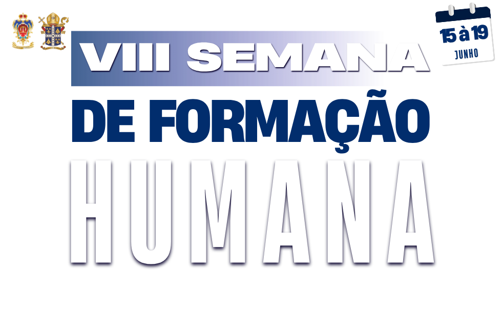
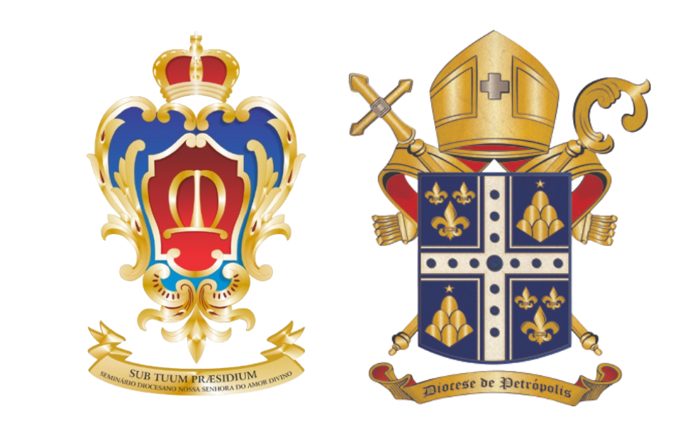

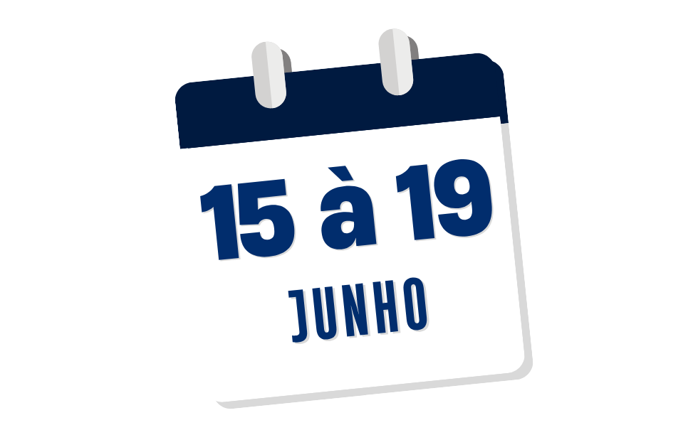



Um tempo de crescimento, reflexão e formação, com especial atenção
à dimensão humana da formação. Nesta VIII edição, o tema central nos
convida a aprofundar:
Formação Integral para uma Vida Sacerdotal Autêntica.
Convidamos todos os seminaristas a se juntarem a nós nesta jornada de
crescimento e reflexão, onde exploraremos a importância de uma
formação que abranja todas as dimensões da vida sacerdotal.
Acreditamos que a formação humana é fundamental para o desenvolvimento
de um sacerdote autêntico, capaz de servir com amor e dedicação à sua
vocação.
Temos por objetivo fortalecer a dimensão humana dos seminaristas,
desenvolvendo competências essenciais para uma vida sacerdotal
autêntica, com foco na formação integral da personalidade. Busca-se
promover a importância das escolhas cotidianas para uma vida
equilibrada, bem como a construção da identidade na configuração com
Cristo, cultivando o equilíbrio psíquico e uma consciência iluminada
pela fé, dando pleno sentido ao chamado de Deus.
"Por isso, no que respeita às motivações, convido os seminaristas a
desenvolver trabalho interior que envolva todos os aspectos da
vida."
Papa Leão XIV -
Uma Fidelidade que Gera Futuro
07:30 - Santa Missa (Dom Joel)
08:30 - Café da Manhã
09:00 - 1ª Conferência: O Princípio de Transcendência (Pe. Hector)
10:30 - Lanche
11:00 - 2ª Conferência: Formação da Consciência (Pe. Anderson)
12:00 - Intervalo
12:20 - Ofício e Hora Média
12:50 - Almoço
14:30 - 3ª Conferência: Seminário como Escola de Vida Cristã (Pe. Luis Carlos)
15:45 - Lanche
16:00 - Torneio de Futebol
17:30 - Banho
18:00 - Orações na Capela
18:30 - Vésperas
19:30 - Fórum: O Mais Belo Ideal do Sacerdócio (Cônego Luiz Carlos Carneiro, Monsenhor Vicente e Padre Caio Cesar)
21:30 - Completas
07:00 - Laudes
07:30 - Santa Missa (Padre Luis Carlos)
08:00 - Café da Manhã
08:30 - 1ª Conferência: Desorientação de Si: Reflexo na Vida Cotidiana (Doutor José Augusto)
10:00 - Lanche
10:30 - 2ª Conferência: Desenvolvimento e Maturidade da Personalidade (Doutor José Augusto)
12:00 - Intervalo
12:20 - Ofício e Hora Média
12:50 - Almoço
14:30 - 3ª Conferência: Liberdade Psíquica e Responsabilidade (Dra. Sandra)
15:45 - Lanche
16:00 - Torneio de Vôlei
17:30 - Banho
18:30 - Orações na Capela
19:00 - Vésperas
19:30 - Dinâmica por Etapa Formativa:
Esponsalidade da Vocação
Grupo 1: Configuração (Padre Hector)
Grupo 2: Discipulado (Padre Luis Carlos)
Grupo 3: Propedêutico - (Padre Kayo)
21:30 - Completas
07:00 - Laudes
07:30 - Santa Missa (Padre Gleison)
08:00 - Café da Manhã
08:30 - 1ª Conferência: Formar-se a Partir das Sagradas Escrituras (Padre Gleison)
10:00 - Lanche
10:30 - 2ª Conferência: Unidade de Vida (Padre Gleison)
12:00 - Intervalo
12:20 - Ofício e Hora Média
12:50 - Almoço
14:30 - Lectio Divina e Escuta Partilhada da Palavra de Deus (Padre Pedro Santana)
15:45 - Lanche
16:00 - Esporte
17:30 - Banho
18:30 - Orações na Capela
19:00 - Vésperas
20:00 - Festa Junina: Noite de Integração
07:00 - Laudes
07:30 - Santa Missa (Padre Fábio de Freitas)
08:00 - Café da Manhã
08:30 - 1ª Conferência: A Sexualidade Humana e seus Transtornos (Padre Fábio de Freitas)
10:00 - Lanche
10:30 - 2ª Conferência: Estilo de Vida como Reflexo das Escolhas Diárias (Padre Fábio de Freitas)
12:00 - Intervalo
12:20 - Ofício e Hora Média
12:50 - Almoço
14:30 - 3ª Conferência: Fatores para uma Personalidade Equilibrada (Padre Fábio de Freitas)
15:45 - Lanche
16:00 - Torneio de Futsal
17:30 - Banho
18:30 - Orações na Capela
19:00 - Vésperas
20:00 - Dinâmica de Grupos: O Sacerdócio e o Sentido da Vida
21:30 - Completas
07:00 - Laudes
07:30 - Santa Missa (Padre Paulo César)
08:00 - Café da Manhã
08:30 - 1ª Conferência: A Virtude da Prudência no Processo de Formação (Padre Fábio de Freitas)
10:00 - Intervalo
10:30 - Preparação de Pequena Síntese Pessoal
11:00 - Trabalhos em Grupo
11:30 - Plenário
12:00 - Almoço de Confraternização
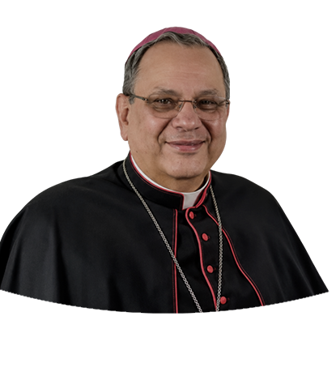
.
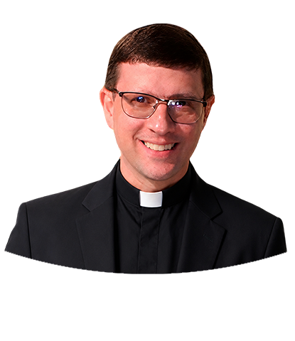
.
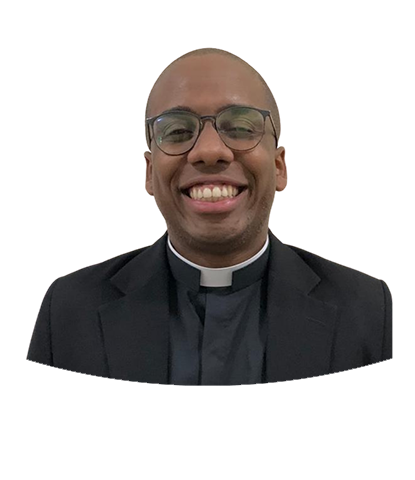
.
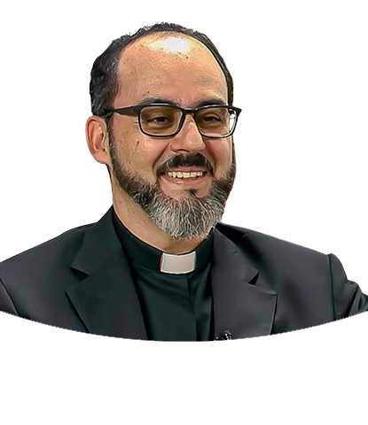
.
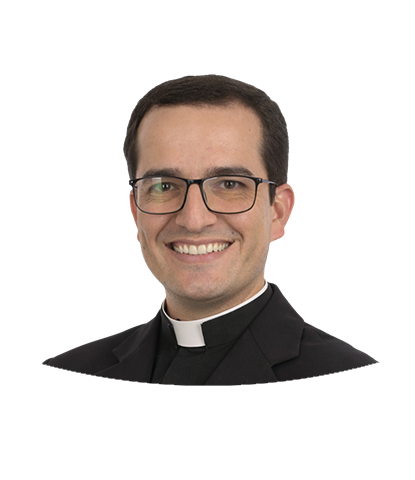
.
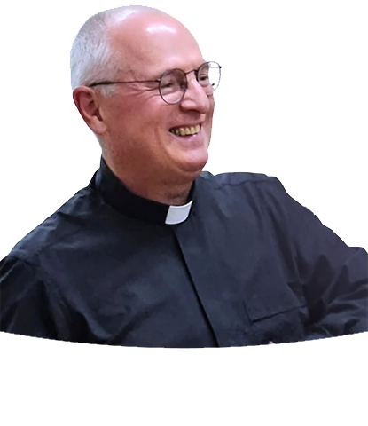
Vigário da Paróquia São José - Itamarati
Diretor Espiritual Adjunto do Seminário Diocesano Nossa Senhora do Amor Divino
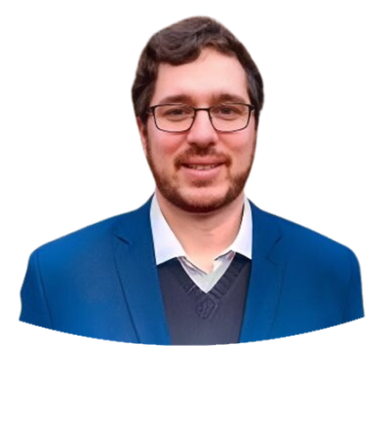
.
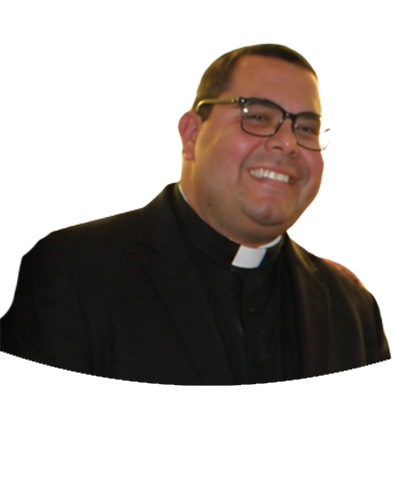
.
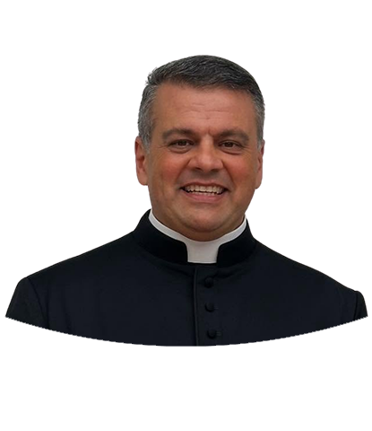
.
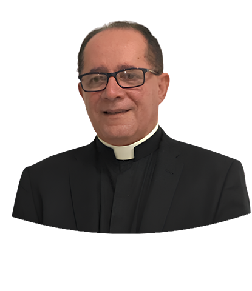
.
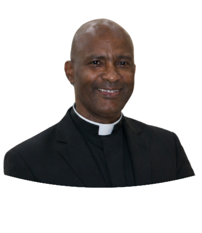
.
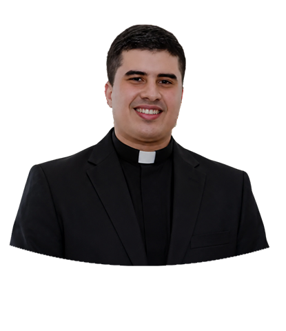
.
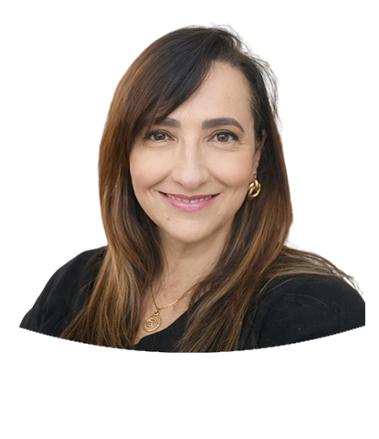
.
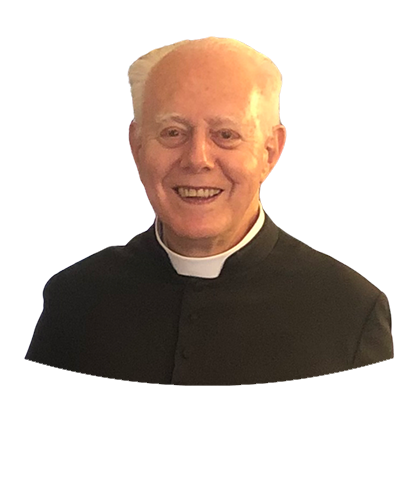
.